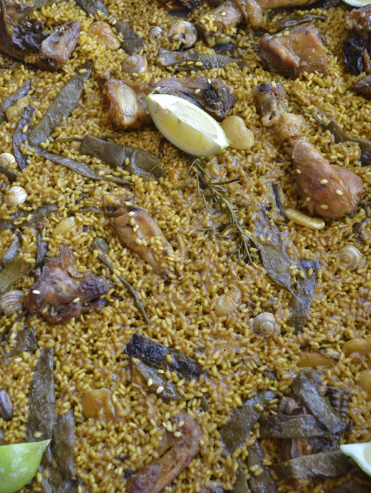

Cuisine espagnole

Cuisine espagnole
Paella valenciana
La paella de Valence, sans fruits de mer
Préparation : 30 min
Cuisson : 1 h 10
Ingrédients (pour 10 personnes)
- 1 kg de riz rond
- 2 kg de poulet en morceaux
- 1 kg de lapin en morceaux
- 500 g de haricots verts plats
- 250 g de garrofó (gros haricots blancs)
- 300 g de tomates
- 100 g de poivron (facultatif)
- 3,5 l d’eau
- 30 cl d’huile d’olive
- 6 g de paprika
- safran, romarin, sel
Quantités adaptées. Les temps de cuisson ne sont pas recalculés.
- Dorer poulet et lapin dans l’huile très chaude, réserver.
- Revenir tomate râpée et poivron 7 à 8 minutes, remettre les viandes, ajouter sel et paprika sans le brûler.
- Couvrir d’eau, cuire 30 à 35 minutes, en ajoutant haricots verts et garrofó frais ou trempés et précuits 10 minutes avant la fin.
- Ajouter le reste d’eau chaude, bouillir 4 minutes, puis safran, romarin et sel, 5 minutes encore.
- Répartir le riz sans plus remuer : 6 minutes à feu vif, puis 10 à 12 minutes en baissant.
- Laisser reposer 5 minutes et servir dans la poêle.
D’après Spain.info, office espagnol du tourisme. Traduit et reformulé, cuisson du riz et des haricots précisée.